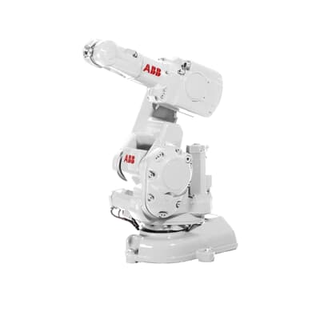
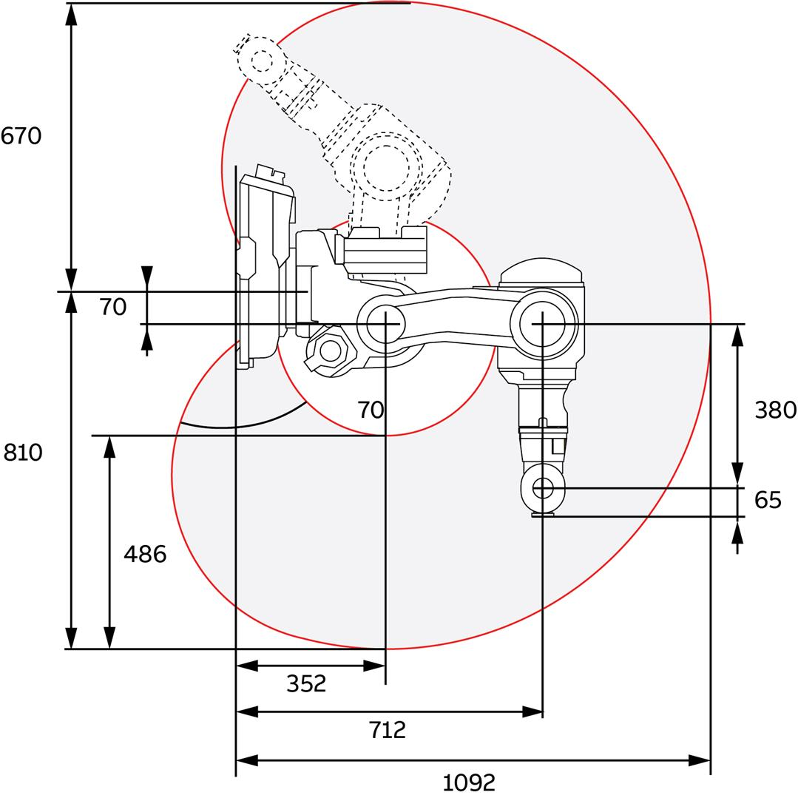
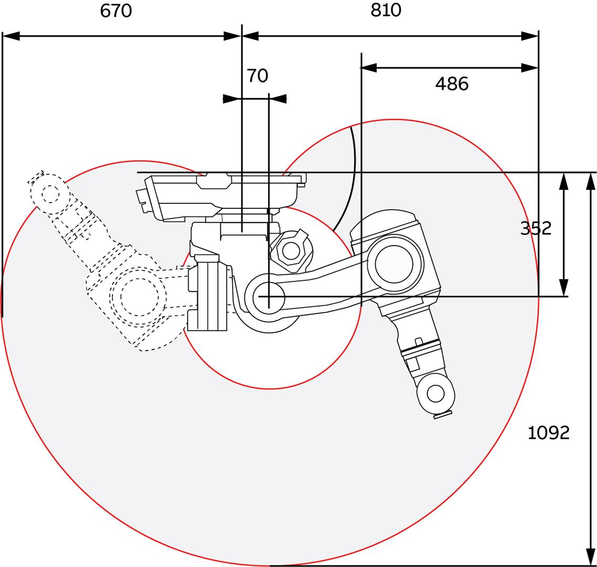
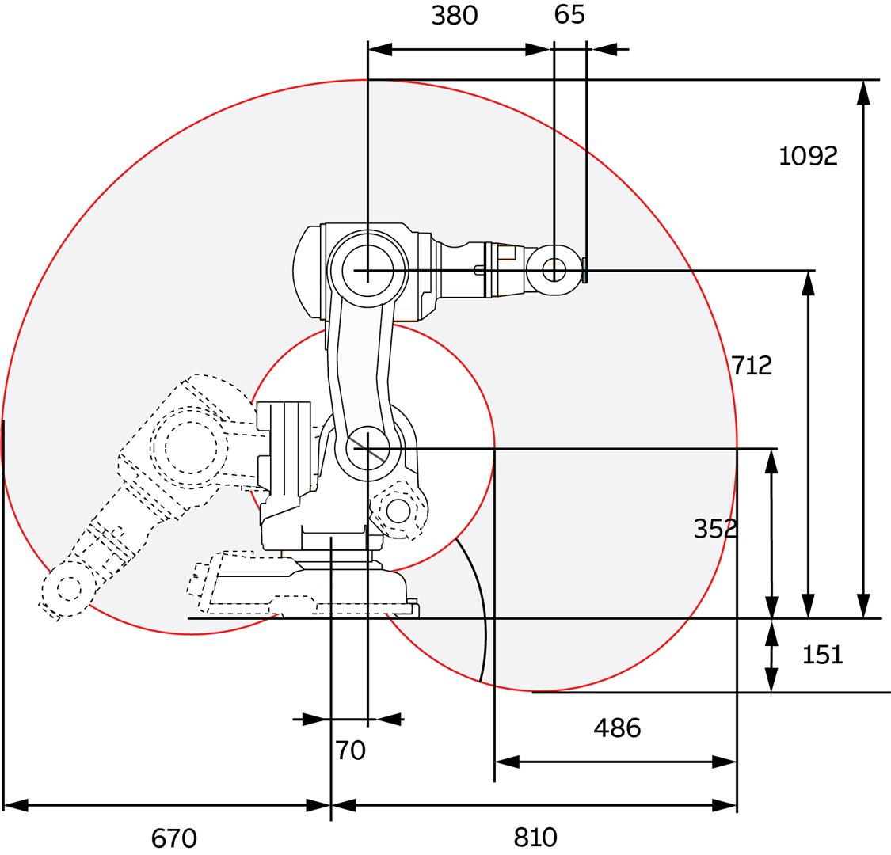
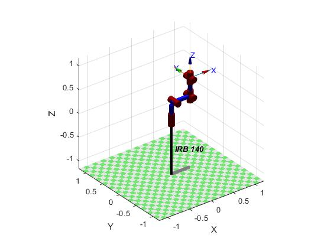
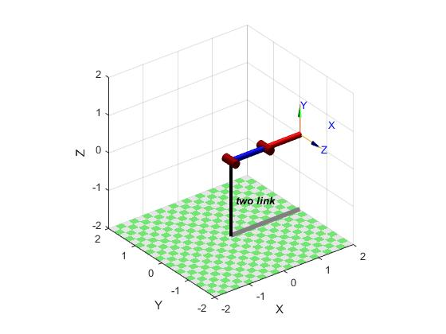

Trabalho de Sistemas Robóticos
Este trabalho foi realizado no ambito da disciplina de Sistemas de Robótica, onde foram estudados dois robos.
Os robos escolhidos neste projeto foram:
- ABB, IRB140, 6DOF, standard_DH (mdl_irb140)
- generic, planar, dynamics, 2DOF, standard_DH (mdl_twolink)
Desta forma exploramos os pontos pedidos, nomeadamente a Cinemática Direta, Cinemática Inversa, e a Trajetoria dos Robos.
mdl_irb140 (Com 6 graus de liberdade)
Pequeno, poderoso, rápido. É assim que o robo IRB 140 é conhecido.
Este robo tem 6 eixos é muito compacto e poderoso. É usado industrialmente, movimenta cargas de 6 Quilos, e tem um alcance de 810 mm.
Pode ser montando no chão, invertido ou na parede em qualquer ângulo. O design robusto com cabos totalmente integrados aumenta a flexibilidade geral e a função de detecção de colisão, garantindo assim que o robo seja confiável e seguro.
O robo IRB 140 está disponivel em várias versões, e é facil de integrar e adequado para uma variedade de aplicações:
- Limpeza/Pulverização
- Manuseamento de Materiais
- Embalação
- Corte
- Soldagem
- Montagem
Características e Especificações
  Desafio Fanta Can - Super Motion Control
Cinemática Direta

mdl_irb140 % Modelo do Robô
robot = IRB 140 [ABB]:: 6 axis, RRRRRR, stdDH, slowRNE
+---+-----------+-----------+-----------+-----------+-----------+
| j | theta | d | a | alpha | offset |
+---+-----------+-----------+-----------+-----------+-----------+
| 1| q1| 0.352| 0.07| -1.5708| 0|
| 2| q2| 0| 0.36| 0| 0|
| 3| q3| 0| 0| 1.5708| 0|
| 4| q4| 0.38| 0| -1.5708| 0|
| 5| q5| 0| 0| 1.5708| 0|
| 6| q6| 0| 0| 0| 0|
%Cinemática Direta
irb140.fkine(qz);
irb140.fkine(qr);
irb140.fkine(qd);
%Plote
tempo = 0:0.5:10;
q = jtraj(qz, qr, tempo);
irb140.plot(q)
pause(1)
q = jtraj(qr, qd, tempo);
irb140.plot(q)
pause(1)
q = jtraj(qd, qz, tempo);
irb140.plot(q)
pause(1)
Cinemática Inversa
mdl_irb140
robot =
IRB 140 [ABB]:: 6 axis, RRRRRR, stdDH, slowRNE
+---+-----------+-----------+-----------+-----------+-----------+
| j | theta | d | a | alpha | offset |
+---+-----------+-----------+-----------+-----------+-----------+
| 1| q1| 0.352| 0.07| -1.5708| 0|
| 2| q2| 0| 0.36| 0| 0|
| 3| q3| 0| 0| 1.5708| 0|
| 4| q4| 0.38| 0| -1.5708| 0|
| 5| q5| 0| 0| 1.5708| 0|
| 6| q6| 0| 0| 0| 0|
irb140.fkine(qd)
ans =
0 0 1 0.45
-1 0 0 0
0 -1 0 0.712
0 0 0 1
qi= irb140.ikine(irb140.fkine(qd),[0 0 0],'mask',[1 1 1 0 0 0]);
figure(1);
irb140.teach(qi)
pause(5)
figure(2);
Ta = irb140.fkine(qi)
Ta.print('xyz')
trplot(irb140.fkine(qd), 'color', 'b')
hold on
trplot(Ta, 'color', 'r') %analisar se a pose difere
Ta =
0.9985 0 0.0540 0.45
0 1 0 0
-0.0540 0 0.9985 0.712
0 0 0 1
t = (0.45, 0, 0.712), RPY/xyz = (0, 3.1, 0) deg
Trajetória
mdl_irb140
robot =
IRB 140 [ABB]:: 6 axis, RRRRRR, stdDH, slowRNE
+---+-----------+-----------+-----------+-----------+-----------+
| j | theta | d | a | alpha | offset |
+---+-----------+-----------+-----------+-----------+-----------+
| 1| q1| 0.352| 0.07| -1.5708| 0|
| 2| q2| 0| 0.36| 0| 0|
| 3| q3| 0| 0| 1.5708| 0|
| 4| q4| 0.38| 0| -1.5708| 0|
| 5| q5| 0| 0| 1.5708| 0|
| 6| q6| 0| 0| 0| 0|
%mover o end-effector entre duas poses cartesianas
SE3(0.5, 0.3, 1) * SE3.Rx(pi);
SE3(0.5, -0.3, 1) * SE3.Rx(pi/2);
% os vetores de coordenadas conjuntas associados a essas poses são
q1 = irb140.ikine6s(SE3(0.5, 0.3, 1) * SE3.Rx(pi));
q2 = irb140.ikine6s(SE3(0.5, -0.3, 1) * SE3.Rx(pi/2));
%tempo para que a trajetoria ocorra
t = [0:0.04:3]';
q = irb140.jtraj(SE3(0.5, 0.3, 1) * SE3.Rx(pi), SE3(0.5, -0.3, 1) * SE3.Rx(pi/2), t);
figure(1);
irb140.plot(q) %animação da trajetoria
figure(2);
qplot(t, q); %traçar todos os ângulos de junta, em função do tempo
mdl_twolink (Com 2 graus de liberdade)
intro
Cinemática Direta

mdl_twolink
twolink.fkine(qz);
twolink.fkine(qn);
q = jtraj(qz, qn, 0:0.5:10);
twolink.plot(q)
pause(1)
q = jtraj(qn, qz, 0:0.5:10);
twolink.plot(q)
pause(1)
Cinemática Inversa
mdl_twolink
twolink.fkine(qn)
ans =
1 0 0 1.866
0 0 -1 0
0 1 0 0.5
0 0 0 1
q = twolink.ikine(twolink.fkine(qn), [0 0], 'mask',[1 1 0 0 0 0])
figure(1);
twolink.teach(q) %plota o robot com o cotovelo para baixo
pause(3)
figure(2);
Ta = twolink.fkine(q);
Ta.print('xyz')
trplot(twolink.fkine(qn), 'color', 'b')
hold on
trplot(Ta, 'color', 'r') %analisar se a pose difere
q =
0.0000 0.5236
t = (1.87, 0, 0.5), RPY/xyz = (30, 0, 90) deg
Trajetória
q0=[0 0];
q1 = [pi/2 0];
t = [0:.06:3];
q = jtraj(q0, q1, t);
figure(1);
twolink.plot(q);
figure(2);
subplot(2,1,1)
plot(t,q(:,1));
 title('Theta');
xlabel('Tempo (s)');
ylabel('Junta 1 (rad)');
subplot(2,1,2)
plot(t,q(:,2));
title('Theta');
xlabel('Tempo (s)');
ylabel('Junta 1 (rad)');
subplot(2,1,2)
plot(t,q(:,2));
 title('Theta');
xlabel('Tempo (s)');
ylabel('Junta 2 (rad)');
[q, dq, ddq] = jtraj(q0, q1, t);
figure(3);
subplot(3,1,1)
plot(t,q(:,1));
title('Theta');
xlabel('Tempo (s)');
ylabel('Junta 2 (rad)');
[q, dq, ddq] = jtraj(q0, q1, t);
figure(3);
subplot(3,1,1)
plot(t,q(:,1));
 title('Theta');
xlabel('Tempo(s)');
ylabel('Junta 1 (rad)');
subplot(3,1,2)
plot(t,dq(:,1));
title('Theta');
xlabel('Tempo(s)');
ylabel('Junta 1 (rad)');
subplot(3,1,2)
plot(t,dq(:,1));
 title('Velocidade')
xlabel('Tempo (s)');
ylabel('Junta 1 vel (rad/s)')
subplot(3,1,3)
plot(t,ddq(:,1));
title('Velocidade')
xlabel('Tempo (s)');
ylabel('Junta 1 vel (rad/s)')
subplot(3,1,3)
plot(t,ddq(:,1));
 title('Aceleração')
xlabel('Tempo (s)');
ylabel('Junta 1 aceler (rad/s2)')
q = jtraj(q0, q1, t);
H = fkine(twolink,q); % Matriz transformação homogênea
Hmat = H.double; % Converte SE3 para Matriz
figure(4);
subplot(3,1,1)
s = 'Gráfico da coordenada x variando no tempo';
plot(t,squeeze(Hmat(1,1,:)));
xlabel('Tempo (s)'); ylabel('x (m)'); title(s);
subplot(3,1,2)
s = 'Gráfico da coordenada y variando no tempo';
plot(t,squeeze(Hmat(2,1,:)));
xlabel('Tempo (s)'); ylabel('y (m)'); title(s);
subplot(3,1,3)
s = 'Gráfico da coordenada z variando no tempo';
plot(t,squeeze(Hmat(3,1,:)));
xlabel('Tempo (s)'); ylabel('z (m)'); title(s);
figure(5);
title('Aceleração')
xlabel('Tempo (s)');
ylabel('Junta 1 aceler (rad/s2)')
q = jtraj(q0, q1, t);
H = fkine(twolink,q); % Matriz transformação homogênea
Hmat = H.double; % Converte SE3 para Matriz
figure(4);
subplot(3,1,1)
s = 'Gráfico da coordenada x variando no tempo';
plot(t,squeeze(Hmat(1,1,:)));
xlabel('Tempo (s)'); ylabel('x (m)'); title(s);
subplot(3,1,2)
s = 'Gráfico da coordenada y variando no tempo';
plot(t,squeeze(Hmat(2,1,:)));
xlabel('Tempo (s)'); ylabel('y (m)'); title(s);
subplot(3,1,3)
s = 'Gráfico da coordenada z variando no tempo';
plot(t,squeeze(Hmat(3,1,:)));
xlabel('Tempo (s)'); ylabel('z (m)'); title(s);
figure(5);
 s = 'Gráfico das coordenadas x e y';
plot(squeeze(Hmat(1,1,:)),squeeze(Hmat(2,1,:)));
xlabel('x (m)'); ylabel('y (m)'); title(s);
s = 'Gráfico das coordenadas x e y';
plot(squeeze(Hmat(1,1,:)),squeeze(Hmat(2,1,:)));
xlabel('x (m)'); ylabel('y (m)'); title(s);